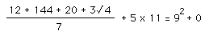
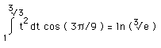

Fun, Puzzles, Travel
Written by Paul Bourke
The following are a number of puzzles presented for your entertainment.
Feel free to submit any puzzles that you think are interesting,
my email address can be found here.
If appropriate I will include them here.
The main requirement for any puzzles listed here is they should not
require any advanced mathematical skills. If you find yourself
writing equations for any of the puzzles you are probably approaching
it the wrong way. (There are only a couple of exceptions below)
The puzzles below are approximately in order of increased difficulty
although it is only my own personal impression.
To answer your next question, no, answers are not provided
to most of the problems.
The whole point of a good puzzle is for it to prey on your mind
until you solve it.
If you are REALLY desperate I will reveal answers if you
beg or for a small inducement (eg: beer, chocolates, postcard).
"I can't understand why people are frightened of new ideas, I'm frightened of the old ones".
John Cage
A computer once beat me at chess, but it was no match for me at kick boxing. Emo Philips
|
Shit Happens
|
Taoism
Confucianism
Buddhism
Zen-Buddhism
Hinduism
Islam
|
Shit Happens.
Confucius say, "Shit Happens".
If shit happens, it is not really shit.
What is the sound of shit happening?
This shit happened before.
If this shit happens, it is the will of Allah.
|
Protestantism
Catholicism
Judaism
New Age
Atheist
Rastafarian
|
Let shit happen to someone else.
If shit happens, you deserved it.
Why does shit always happen to us?
A firm shit does not happen to me.
I don't believe this shit.
Let's roll that shit up and smoke it.
|
Contrary to what most people say, the most dangerous animal in the world
is not the lion or the tiger or even the elephant. It's a shark riding
on an elephant's back, just trampling and eating everything they see.
Astro-photography
-
Fun with the Garmin VIRB
-
Syzygy: Transit of Venus, 8 June 2004
-
Solar eclipse, 4 Dec 2002
-
Total Lunar Eclipse, 16 July 2000
-
Leonid meteor shower 18 November 2001
A good way to threaten somebody is to light a stick of dynamite. Then
you call the guy and hold the burning fuse up to the phone. "Hear that?"
you say. "That's dynamite, baby!"
Geometric
-
Slicing a torus.
How many ways can a torus be cut (with a single plane) so that the
resulting cross sections are perfect circles?
-
Fitting puzzle
-
The ribbed sphere.
Do plans and elevations describe unique geometry?
-
Common misconception regarding a cube.
Most people are poor at visualising even the simplest geometry.
-
Designing the golf ball pyramid puzzle
For your penance, say five Hail Marys and one loud BLAH! Spike Milligan
Limeric Math
|

A dozen, a gross, and a score,
plus three times the square root of four,
divided by seven,
plus five times eleven,
equals nine squared and no more!
|

The integral of t squared dt
from one to the cube root of three
times the cosine
of three pi over nine
is the log of the cube root of e
|
"And still they gazed and the wonder grew, That one small head could carry all he (she) knew."
Oliver Goldsmith
Travel related
-
Happy snaps from St Petersburg, Russia, July 2019
-
-
Happy snaps from Thailand, July 2019
-
-
India: Happy snaps, November-December 2918.
Manipal and surrounding areas.
Bangalore.
-
Seoul in half a day, South Korea.
-
Venice, Italy.
-
Istanbul and Cappadocia, Turkey.
-
Malaysia: Kuching (Sarawak).
Kota Kinabalu (Saba).
Terengganu.
Mah Meri photos.
-
Two headed turtle. Found in the turtle zoo, Chinese Garden, Singapore, June 2007
-
China: Shanghai.
Shenzhen.
Xi'an.
Beijing (Bi/Tri)-Cycle Gallery.
Dragon Gardens, Hong Kong.
-
Phnom Penh Tuk-Tuk album.
-
Australia: Pink Lakes, Victoria, Australia.
Beacon Island, Western Australia.
Pinnacles, Western Australia.
West Angeles, Western Australia.
Rock shelters, Western Australia.
Pigeon Island, Western Australia.
Caversham motoring museum, featuring the 1989 Star, Western Australia.
Human Cortex in the Western Australian outback.
Diamantina River.
Weld Range rock shelter, Western Australia.
Virtual tour of a Pilbara Rock Art Site (Wanmanna), Western Australia.
Examples of digital assets collected at Wanmanna 2014 Western Australia.
LadyBug-3 filming on the Endeavour, Perth, Western Australia.
2.5km under water, Western Australia.
Site of the ASKAP, Western Australia.
Images relating to the Ngintaka story, Central Australia.
Cave Hill, South Australia.
Wall art, murals, street painting, graffiti in Sydney, Australia.
Street art and 3D models from Perth, Australia.
A giant rocking horse. The silliest thing I saw during my 1996/97 Xmas break.
Birds in Denmark, WA.
-
Rotomahana, New Zealand.
-
Auckland (Harrah Casino) Skytower.
A photo gallery during the construction of the Skytower in Auckland
built during 1996. Contains images from the top during and after
the construction as well as the 101
uses for the Skytower.
-
Auckland Albert Park Air Raid Shelters.
These pages illustrate an interesting feature of Auckland history, unknown to
many Aucklanders there is a maze of tunnels under a central city park,
namely Albert Park. The original maps of the tunnels (1942) are presented
at user selectable scales and with links to contemporary features.
Politicians are like nappies. They should be changed regularly and for the same
reason. Patrick Murray
Other
-
Try to guess what these objects are.
-
-
iTunes gift card scam
-
-
Fun with a drone
-
SfM fun.
Weird results one can get with photogrammetry (Structure from Motion) software.
-
Does AppleCare ..?.
Excessive and non-environmentally friendly packaging by Apple.
-
Holographic display anyone?
(QuickTime Movie)
-
Fun calculus.
How's your high school calculus? A bucket that holds paint but can't be painted!
-
Minus One poem
-
Heaven is hotter than hell. Basic thermodynamics and the bible.
-
Make Waves not Water.
If you are female and don't have a sense of humour then perhaps you shouldn't
read this. I guess you're sure to read it now!
-
Birth assistance patent. Believe it or not, this patent is for real!
-
UWA @ SecondLife.
A photographic gallery of the University of Western Australia's venture into SecondLife.
-
Silly statement from my bank
Art, like morality, consists of drawing lines somewhere.
G.K. Chesterton
|
Contents :
|
Papers, Presentations, Workshops
Geometry, Surfaces, Curves, Polyhedra
Fractals, Chaos, Self similarity
Domes, Planetariums, Fisheye, Spherical Mirror
Stereographics, 3D Projection
Panorama, 360 Video
Photographic Reconstruction
Miscellaneous: Projection, Modelling, Rendering
Data Formats: 3D, Audio, Image
Texture Library,
Fun, Puzzles, Travel
All pages in one place
|
|
New/Updated :
|
Attractors in 3D for VR viewing
Manual camera calibration for fisheye image projection
Experiments in Reverse Perspective
Tools for Spherical Mirror Projection
|
|
Offsite :
|
FaceBook,
Sketchfab,
YouTube,
Vimeo,
Shapeways
|
The contents of this web site are © Copyright Paul Bourke or
a third party contributor where indicated.
You may print or save an electronic copy of parts of this web site for your own personal use.
Permission must be sought for any other use.
Any source code found here may be freely used provided credits are given to the author.
Purchase of credit free licenses of material found on this site can be negotiated
with the author. The author can also quote for unique variations and/or higher
resolution versions of the images found on this site.
|